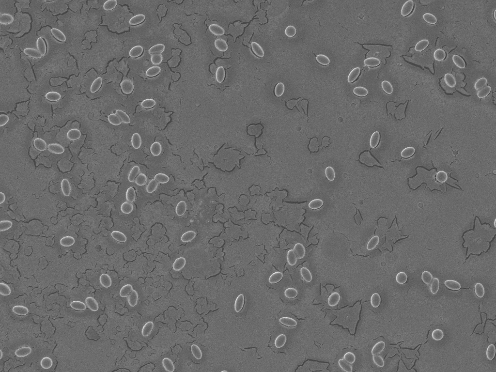
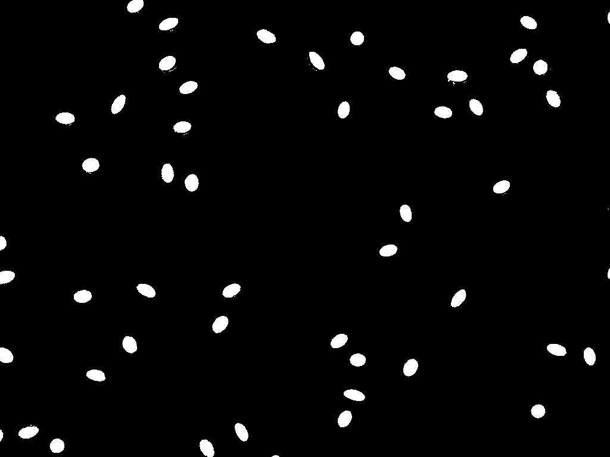
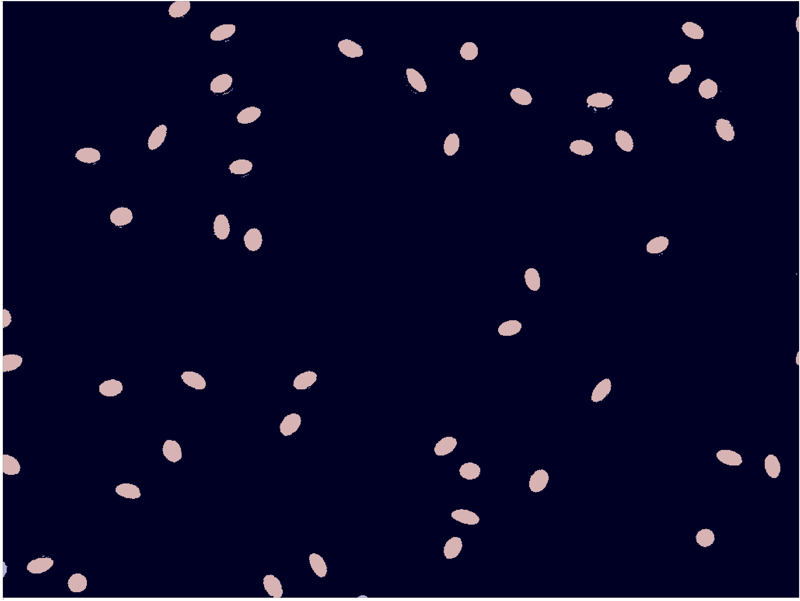
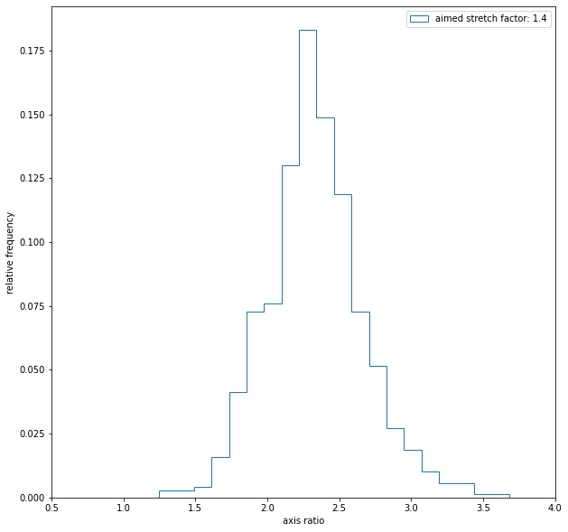

As part of my Master Thesis, I needed to classify samples with 500 nanometer sized polysterene particles. They were stretched from a spherical to an elliptical shape and then imaged using an electron microscope. The resulting images are now used to classify the statistics of a given sample.
Image Processing
Shape detection | Statistics
Python | Computer Vision
Below is an example image from the electron microscope. The particles are randomly distributed and sometimes aggregate. The contrast is already optimized while taking the images. In the backround, inhomogenities are visable that are caused by the gold layer that is needed to image the partciles. For each sample, multipile images have been recorded of different areas, making sure to capture as many as possible without being biased. Measuring their shape manually is not feasible, since this would require a lot of time.
Before continuing, each image is preprocessed in the following manner: First, they are binarized with a threshold that is adjusted to the overall grey factor of the image. Next, noise get reduced by removing pixels that are not bundled together. The last step is to remove the aggregates. This step was done manually. The result is below.
Now an algorithm is used (see below) that detects the ellipses and calculates their aspect ratio. Each number is stored in a list and combined with all other images of the same sample to decrease the statistical error. Below is the result of the algorithm, overlayed with the preprocessed image.
As a last step, a simple histogram can be plotted, and the standard deviation and average axis ration of the sample can be determined.

from matplotlib import pyplot as plt
import cv2
import numpy as np
import pandas
import os
image_path = 'example_path_123.tif'
# parse the filename
filename = ''.join(image_path.split("/")[-1].split(".")[:-1])
print(image_path)
# Read in the grayscale image
img = cv2.imread(image_path, 0)
# Convert the image to binary using thresholding
ret, thresh = cv2.threshold(img, 127, 255, 0)
# Find contours in the binary image
contours, hierarchy = cv2.findContours(thresh, cv2.RETR_TREE, cv2.CHAIN_APPROX_SIMPLE)
# Create an empty mask to draw the ellipses on
mask = np.zeros(img.shape, dtype=np.uint8)
# Initialize an empty list to store the axis ratios of the ellipses
axis_ratios = []
# Loop through each contour and fit an ellipse to it
for cnt in contours:
if (cnt.shape[0] >= 10): # minimum number of points needed to fit an ellipse
ellipse = cv2.fitEllipse(cnt)
cv2.ellipse(mask, ellipse, (255, 255, 255), -1) # draw the ellipse on the mask
try:
axis_ratio = ellipse[1][1] / ellipse[1][0] # calculate the axis ratio of the ellipse
except ZeroDivisionError:
continue
axis_ratios.append(axis_ratio) # add the axis ratio to the list
# Show the original image with the ellipses overlaid on it
result = cv2.bitwise_and(img, mask)
cv2.imshow('Ellipses', result)
plt.rcParams["figure.figsize"] = [100, 100]
plt.figure()
plt.imshow(img, 'gray', interpolation='none')
plt.imshow(result, 'jet', interpolation='none', alpha=0.3)
plt.xticks([False])
plt.yticks([False])
plt.show()